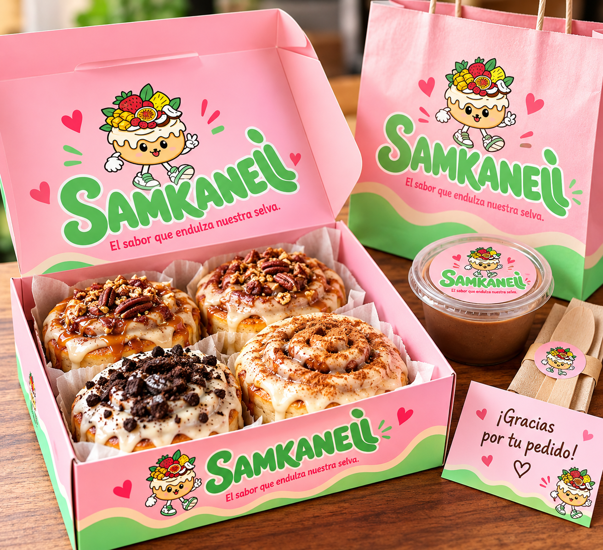
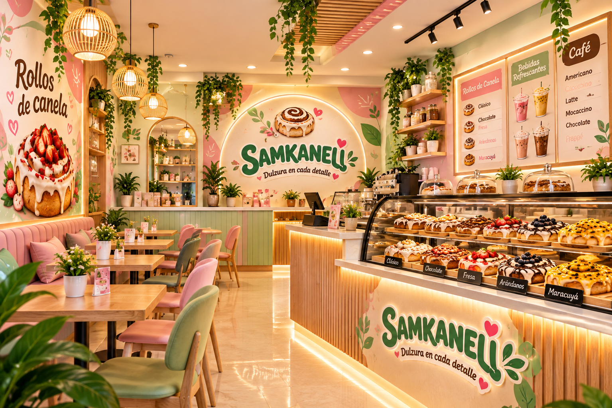

SAMKANELI
Marca de rollos de canela artesanales.
Descubre cómo SAMKANELI construye su identidad, expresa sus valores y comunica una experiencia dulce inspirada en los sabores y la riqueza natural de la Selva Central.
EL SABOR QUE ENDULZA NUESTRA SELVA
Una marca artesanal que transforma los tradicionales rollos de canela en una experiencia de sabor, creatividad y conexión con los frutos de nuestra Selva Central.
Marca de rollos de canela artesanales.
Una frase que representa la esencia de la marca.
Elaboración y comercialización de productos de repostería.
La unión de la canela, la creatividad y los frutos de la Selva Central.
Diseño orgánico, cálido, juvenil y con colores pastel.
La imagen que SAMKANELI construye en la mente de las personas: color, fotografía, textura y emoción.
.png)


El sabor que endulza nuestra selva

Dulce, artesanal
y de la selva
| Ficha técnica | Descripción de SAMKANELI |
|---|---|
| Definición | Estudia cómo se construye y percibe la imagen de SAMKANELI ante sus consumidores. |
| Aplicación | Construcción de la imagen corporativa de una marca de rollos de canela artesanales. |
| Objetivo | Transmitir una imagen dulce, artesanal, confiable, creativa y conectada con la Selva Central. |
| Personalidad | Acogedora, alegre, natural, cercana, innovadora y artesanal. |
| Público objetivo | Jóvenes y adultos que disfrutan de la repostería, los productos artesanales, los sabores frutales y las experiencias gastronómicas diferentes. |
| Identidad visual | Logotipo SAMKANELI, elementos gráficos inspirados en la canela, los frutos tropicales y la naturaleza de la Selva Central. |
| Colores corporativos | Rosa pastel, crema, marrón canela, verde pastel y marrón oscuro. |
| Percepción deseada | Que el consumidor relacione SAMKANELI con productos deliciosos, presentación cuidada, creatividad, calidad artesanal y sabores de la selva. |
SAMKANELI busca proyectar una imagen que combine la tradición de los rollos de canela con la riqueza frutal de la Selva Central. Su identidad transmite dulzura, calidez y creatividad mediante una presentación visual de colores pastel, fotografías de producto, texturas naturales y elementos gráficos orgánicos. La marca busca diferenciarse por sus combinaciones de sabores inspiradas en frutas como mango, maracuyá, piña, coco y chocolate.
La iconología estudia e interpreta los significados simbólicos y culturales de las imágenes. En SAMKANELI, cada elemento gráfico representa una parte de su personalidad, sus productos y su inspiración en la naturaleza de la Selva Central.

La iconología de SAMKANELI se construye a partir de símbolos asociados con la repostería, los frutos tropicales y el entorno natural de la Selva Central. Estos elementos ayudan a comunicar la esencia de la marca y a crear una identidad visual fácil de reconocer.
Representa el producto principal, la tradición repostera y el carácter artesanal de SAMKANELI.
Representan la variedad de sabores, la creatividad y la riqueza frutal de la Selva Central.
Simbolizan frescura, crecimiento, origen natural e inspiración regional.
Representan el aroma, la elaboración cuidadosa y la esencia tradicional del producto.
Comunican dulzura, cercanía, calidez y una personalidad alegre y acogedora.
Los símbolos se trasladan a los empaques, etiquetas, fotografías y piezas de comunicación de SAMKANELI.


| Símbolo | Significado en SAMKANELI |
|---|---|
| Rollo de canela | Identifica el producto principal y representa la tradición artesanal. |
| Frutas tropicales | Representan los sabores de mango, maracuyá, piña, coco y chocolate. |
| Hojas | Simbolizan la naturaleza, frescura y riqueza de la Selva Central. |
| Canela | Representa el aroma, el sabor y la esencia del producto. |
| Colores pastel | Transmiten dulzura, cercanía, calidez y personalidad. |
La iconología de SAMKANELI utiliza elementos visuales relacionados con la repostería artesanal y la naturaleza tropical. La combinación del rollo de canela, las frutas, las hojas y los colores pastel permite construir una identidad simbólica que conecta el producto con su inspiración regional. Estos símbolos hacen que la marca comunique mucho más que un alimento: representan una experiencia dulce inspirada en nuestra selva.
La imagen verbal comprende las palabras, frases, mensajes y expresiones que construyen la identidad comunicativa de una marca. Es la manera en que SAMKANELI expresa su personalidad y establece una conexión emocional con sus consumidores.

SAMKANELI utiliza un lenguaje cercano, cálido y emotivo. Sus mensajes resaltan la experiencia de disfrutar un rollo de canela artesanal, la variedad de sabores y la inspiración natural de la Selva Central.
Este eslogan comunica la esencia de la marca mediante tres ideas: el sabor como experiencia principal, la dulzura como atributo del producto y la selva como inspiración que diferencia a SAMKANELI.

El mensaje de SAMKANELI destaca el trabajo artesanal y los sabores inspirados en las frutas de la Selva Central. Usa un lenguaje sencillo para que el público reconozca la personalidad de la marca y recuerde su propuesta.
«Déjate conquistar por la dulzura de nuestros rollos de canela. Sabores tropicales, momentos especiales y un toque de nuestra selva en cada bocado. SAMKANELI, el sabor que endulza nuestra selva.»
Resultado esperado: una comunicación clara, cercana y fácil de recordar, que permita reconocer la personalidad de SAMKANELI.
Convertir una palabra o frase en una imagen verbal. Para SAMKANELI se desarrolla el ejercicio a partir de su eslogan oficial, transformando el mensaje escrito en una composición visual tipográfica.

En una sola escena, cada palabra del eslogan se vuelve algo que se puede ver y probar: el rollo de canela cuenta el sabor, el glaseado lo endulza y la fruta y las hojas nos llevan a la selva.
Las tres dimensiones trabajan de manera complementaria para construir una identidad corporativa coherente.
Construye la percepción e imagen pública de SAMKANELI. Busca transmitir dulzura, confianza, creatividad y conexión con la Selva Central.
Da significado a los símbolos y elementos gráficos: rollos de canela, frutas tropicales, hojas y colores corporativos.
Comunica la personalidad de la marca mediante su nombre, eslogan, palabras clave, tono comunicativo y mensajes publicitarios.
| Concepto | Función en SAMKANELI |
|---|---|
| Imagología | Construye la percepción e imagen de la marca ante sus consumidores. |
| Iconología | Interpreta los significados de los símbolos y elementos gráficos de la identidad. |
| Imagen verbal | Comunica la personalidad de SAMKANELI mediante palabras y mensajes. |
SAMKANELI integra la imagología, la iconología y la imagen verbal para desarrollar una identidad corporativa coherente. La imagología permite proyectar una imagen artesanal, dulce y cercana; la iconología aporta significado mediante símbolos inspirados en los rollos de canela, las frutas tropicales y la naturaleza; y la imagen verbal transmite los valores de la marca mediante su nombre, eslogan y mensajes publicitarios.
De esta manera, SAMKANELI busca representar la unión entre la tradición repostera, la creatividad y los sabores de la Selva Central, creando una identidad visual y comunicativa propia que conecta con sus consumidores.
SAMKANELI · El sabor que endulza nuestra selva.
↑ Volver al inicio

